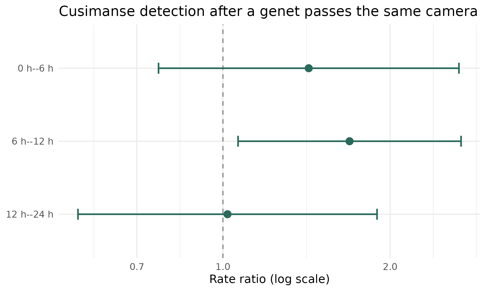

Directed encounter responses between species
Does one species’ passage change another’s short-term detection at the same camera?
2026-08-22
Source:vignettes/articles/encounter_response.Rmd
encounter_response.RmdBeyond “do they overlap?”
A common question in camera trap ecology is whether two species are active at the same times of day. An activity overlap answers that: it compares two daily rhythms. But it is silent about order and place. Two species can share an identical dusk peak and never once meet at the same spot.
ct_fit_encounter_response() asks a different, more
pointed question. Along the timeline of a single camera:
After one species (the trigger) passes a camera, does a second species (the response) become more, or less, likely to be detected there in the following hours, once we account for that camera’s daily rhythm, its season, its location, and how long it was switched on?
This is a directed (trigger then response), local (same camera), short-term (hours) association. It is a description of co-occurrence in time, not a proof of interaction. We return to that distinction at the end.
The mechanics is that each camera’s uptime is sliced into short equal slots (e.g 15min); the response detections in each slot are counted; every slot is labelled by how long ago the trigger last passed; and the response rate in the slots just after a trigger is compared with the rate in “baseline” slots (long after a trigger, or before any), holding time-of-day, month, camera, and slot length equal. The comparison returns a rate ratio for each lag window: 1 means no change, above 1 means detected more than expected, below 1 less.
Use case
We use the bundled lama dataset: a camera-trap survey of
the Lama Classified Forest, a semi-deciduous forest remnant in the
Dahomey Gap of southern Benin. Twenty-three cameras ran from June to
December 2024 and recorded eighteen mammal taxa. It ships as a list of
two tables that share a camera column.
library(ct)
library(ggplot2)
data(lama)
# One row per image: who, where, when (plus distance-sampling fields)
head(lama$observation[, c("camera", "species", "datetime", "distance")])
#> # A tibble: 6 × 4
#> camera species datetime distance
#> <chr> <chr> <dttm> <dbl>
#> 1 C008 Chlorocebus tantalus 2024-07-09 14:00:21 3
#> 2 C008 Chlorocebus tantalus 2024-07-09 14:00:21 2.5
#> 3 C008 Cercopithecus erythrogaster erythrogaster 2024-07-25 09:34:47 4.5
#> 4 C008 Cercopithecus erythrogaster erythrogaster 2024-07-25 09:34:47 4.5
#> 5 C008 Potamochoerus porcus 2024-07-28 17:58:12 6
#> 6 C008 Potamochoerus porcus 2024-07-28 17:58:12 4
# One row per camera: when it was installed and pulled out
head(lama$deployment[, c("camera", "start", "end")])
#> # A tibble: 6 × 3
#> camera start end
#> <chr> <dttm> <dttm>
#> 1 C008 2024-07-06 11:12:00 2024-12-31 10:12:00
#> 2 C009 2024-07-06 12:07:00 2024-12-31 11:07:00
#> 3 C010 2024-07-06 13:45:47 2024-12-31 12:45:47
#> 4 C011 2024-07-06 15:27:57 2024-12-31 14:27:57
#> 5 C013 2024-07-06 16:11:03 2024-12-31 15:11:03
#> 6 C016 2024-06-26 16:23:40 2024-12-31 15:23:40The two most-recorded carnivores make a good test case. The pardine genet (Genetta pardina/maculata) is a solitary, largely nocturnal mesocarnivore; the flat-headed cusimanse (Crossarchus platycephalus) is a diurnal, group-living mongoose.
sort(table(lama$observation$species), decreasing = TRUE)[1:6]
#>
#> Crossarchus platycephalus Tragelaphus scriptus Potamochoerus porcus
#> 1881 1560 1081
#> Philantomba walteri Cercopithecus mona Genetta pardina/maculata
#> 985 824 627We ask: does a genet’s passage shift the short-term detection of cusimanse at the same camera?
Fitting an encounter-response model
Because the deployments span roughly six months, a fine 15-minute grid would produce hundreds of thousands of slots. We use two-hour slots and lag windows of 0 to 6, 6 to 12, and 12 to 24 hours, which matches the day-scale question and keeps the model quick.
fit <- ct_fit_encounter_response(
data = lama$observation,
deployment = lama$deployment,
trigger = "Genetta pardina/maculata",
response = "Crossarchus platycephalus",
species_column = species,
cam_column = camera,
datetime_column = datetime,
start_column = start,
end_column = end,
interval = 2 * 3600,
lag_breaks = c(0, 6 * 3600, 12 * 3600, 24 * 3600),
engine = "glm",
n_boot = 0
)
summary(fit)#> Conditional encounter-response model
#> Engine: glm | Inference: model-based
#> Independent response events: 229 | Analysis intervals: 51084 | Dispersion: 0.659
#> lag rate_ratio lower upper p_value n_response_events
#> No recent trigger 1.000000 1.0000000 1.000000 NA 202
#> 0 h--6 h 1.427159 0.7657996 2.659683 0.26277030 7
#> 6 h--12 h 1.690336 1.0647924 2.683372 0.02600073 13
#> 12 h--24 h 1.019202 0.5484158 1.894134 0.95203351 7
#> exposure_hours
#> 98390
#> 1008
#> 945
#> 1802We chose engine = "glm" deliberately. These counts are
underdispersed (the reported dispersion is below one, because
most two-hour slots hold zero or one cusimanse). The quasi-Poisson GLM
handles that natively; the mixed-model engine’s negative-binomial
family, built for over-dispersion, is a poor fit here.
Reading the result
fit$estimates[, c("lag", "rate_ratio", "lower", "upper", "p_value", "n_response_events")]
#> lag rate_ratio lower upper p_value n_response_events
#> 1 No recent trigger 1.000000 1.0000000 1.000000 NA 202
#> 2 0 h--6 h 1.427159 0.7657996 2.659683 0.26277030 7
#> 3 6 h--12 h 1.690336 1.0647924 2.683372 0.02600073 13
#> 4 12 h--24 h 1.019202 0.5484158 1.894134 0.95203351 7How to read this table
Start at the baseline. The No recent trigger row is the yardstick: its
rate_ratio is always 1. Every other row is measured against it.
Read each ratio as a multiplier. rate_ratio is how many times the baseline
detection rate the response species was seen at in that window, after the model has held time of day,
month, camera, and slot length equal. Above 1 means detected more often than expected; below 1 means
less; 1 means no change.
Trust the interval before the point. If lower to upper straddles 1,
the data cannot separate that window from "no effect". If the whole interval sits above 1 (or below 1),
the signal is statistically supported. Read p_value as a rough flag (small = unlikely to be
a fluke), and glance at n_response_events: a big ratio built on a handful of detections is
fragile.
So, this table: the 6 to 12 h window has a rate ratio near 1.7 with an interval entirely above 1, so cusimanse were detected about 1.7 times more often than expected in that window. The 0 to 6 h and 12 to 24 h windows have intervals that cross 1, so they show no clear association.
In the 6 to 12 hour window after a genet passes, cusimanse are detected roughly 1.7 times as often as the camera’s own time-of-day and season would predict, and its confidence interval clears one (p around 0.03). The 0 to 6 hour and 12 to 24 hour windows sit near one, with intervals spanning it: no clear signal there.
A forest plot makes the pattern easy to read against the reference line at one:
est <- fit$estimates[fit$estimates$lag != "No recent trigger", ]
est$lag <- factor(est$lag, levels = rev(est$lag))
ggplot(est, aes(rate_ratio, lag)) +
geom_vline(xintercept = 1, linetype = 2, colour = "grey50") +
geom_errorbarh(aes(xmin = lower, xmax = upper), height = 0.15,
colour = "#2A6A5A", linewidth = 0.8) +
geom_point(size = 3.2, colour = "#2A6A5A") +
scale_x_continuous("Rate ratio (log scale)", trans = "log10") +
labs(y = NULL,
title = "Cusimanse detection after a genet passes the same camera") +
theme_minimal(base_size = 12)
Rate ratios (points) with 95% confidence intervals for each lag window after a genet detection. Values above the dashed line at 1 mean cusimanse were detected more often than expected.
At these cameras, a genet’s passage is followed by a modest but statistically supported rise in cusimanse detection within the following half day, over and above what each camera’s ordinary daily rhythm predicts. It is the kind of delayed, same-site association that a diel overlap coefficient cannot see.
How robust is it?
An interval-based approximation should not hinge on the slot width
you happened to pick. Passing interval_sensitivity refits
the rate ratios across other widths so you can judge that directly. (The
call above can take
interval_sensitivity = c(3 * 3600, 4 * 3600); the fitted
object then carries a $sensitivity table.)
fit_s <- ct_fit_encounter_response(
data = lama$observation, deployment = lama$deployment,
trigger = "Genetta pardina/maculata", response = "Crossarchus platycephalus",
species_column = species, cam_column = camera, datetime_column = datetime,
start_column = start, end_column = end,
interval = 2 * 3600, lag_breaks = c(0, 6 * 3600, 12 * 3600, 24 * 3600),
engine = "glm", n_boot = 0, interval_sensitivity = c(3 * 3600, 4 * 3600)
)
fit_s$sensitivity#> # A tibble: 12 × 5
#> interval lag rate_ratio lower upper
#> <dbl> <fct> <dbl> <dbl> <dbl>
#> 1 7200 No recent trigger 1 1 1
#> 2 7200 0 h--6 h 1.43 0.766 2.66
#> 3 7200 6 h--12 h 1.69 1.06 2.68
#> 4 7200 12 h--24 h 1.02 0.548 1.89
#> 5 10800 No recent trigger 1 1 1
#> 6 10800 0 h--6 h 1.28 0.696 2.37
#> 7 10800 6 h--12 h 1.52 0.951 2.44
#> 8 10800 12 h--24 h 1.11 0.604 2.05
#> 9 14400 No recent trigger 1 1 1
#> 10 14400 0 h--6 h 2.15 1.29 3.59
#> 11 14400 6 h--12 h 1.11 0.620 1.97
#> 12 14400 12 h--24 h 1.24 0.643 2.38This is worth reading carefully, because it shows both what is robust and what is not. Across two-, three-, and four-hour slots, every early-window estimate stays above one: the direction of the effect, more cusimanse than expected in the hours after a genet, is stable. But which window carries the significant signal slides as the slots coarsen, from the 6 to 12 hour window at two-hour slots toward the 0 to 6 hour window at four-hour slots. The honest conclusion is therefore the broad one, an elevation within roughly the first half day, rather than a claim pinned to one exact lag. Trusting the general pattern while distrusting the precise window is exactly the discipline a discretised approximation calls for.
Two engine notes for your own analyses:
- For smaller studies you can make the inference a
camera-block bootstrap with
n_boot = 199(the default forengine = "glm"). It resamples whole cameras, so it respects the fact that repeated slots at one camera are not independent. We skipped it here only because the six-month grid makes many refits slow. - When counts are over-dispersed,
engine = "glmm"fits camera as a random effect (via glmmTMB or lme4) and needs no bootstrap.
# Random-effects alternative (for over-dispersed data / many sparse cameras)
ct_fit_encounter_response(
data = lama$observation, deployment = lama$deployment,
trigger = "Genetta pardina/maculata", response = "Crossarchus platycephalus",
species_column = species, cam_column = camera, datetime_column = datetime,
start_column = start, end_column = end,
interval = 2 * 3600, lag_breaks = c(0, 6 * 3600, 12 * 3600, 24 * 3600),
engine = "glmm"
)What the model does, and does not, tell you
The result is an association, conditional on the fitted baseline, never a proof of cause. Keep three limits in view.
- Shared drivers. The model removes steady, daily, and seasonal patterns, but not an episodic cause that draws both species independently: a fruiting tree, a waterhole, a spell of weather. Such a driver can manufacture an apparent response with no interaction at all. The genet-to-cusimanse signal here is consistent with shared use of the same productive microsites as much as with any direct following.
- Detection is not presence. A camera records a thinned, imperfect sample of what passes. A shift in detection rate need not be a shift in true site use.
- Empty windows say nothing. If the response never appears in a lag window, the function returns a blank for it rather than a fabricated number. A table full of blanks means the two species simply do not co-occur on this timescale, which is a finding in itself, not a result to over-read.
Used with those caveats, ct_fit_encounter_response()
turns a pile of timestamped detections into a compact, directed,
effort-corrected summary of how two species’ visits line up in time, and
a fair way to ask whether one appears to react to the other.
Data and citation
The lama dataset accompanies a multispecies camera-trap
census of the Lama Classified Forest:
Adounké, G.R.M., Lecompte, E., Gandaho, S.M., Toyi, M.S., Azihou, A.F., Hugueny, B., Sinsin, B.A., Gaubert, P., & Djagoun, C.A.M.S. (submitted). Camera-trap distance sampling reveals density patterns and anthropogenic drivers of terrestrial mammals in a remnant forest refuge in West Africa. Ecology and Evolution.
citation("ct")
#> To cite package 'ct' in publications use:
#>
#> Gandaho S (2026). _ct: Camera trap data management and multi-method
#> ecological analysis_. R package version 0.4.0,
#> <https://stangandaho.github.io/ct/>.
#>
#> A BibTeX entry for LaTeX users is
#>
#> @Manual{,
#> title = {ct: Camera trap data management and multi-method ecological analysis},
#> author = {Stanislas Mahussi Gandaho},
#> year = {2026},
#> note = {R package version 0.4.0},
#> url = {https://stangandaho.github.io/ct/},
#> }